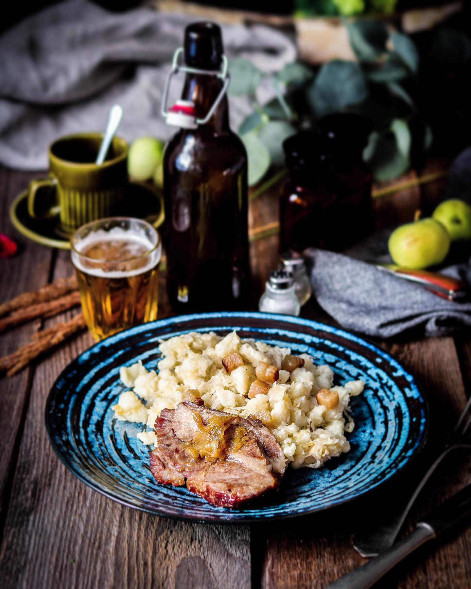

Strapačky s kapustou podľa @coolinari — Normy Jedál
Dnes na obed vepřo-knedlo-zelo na slovensky sposob. Halusky s kapustou namiesto knedlika a zeli a vepřo dobre upečená krkovička. 😂😂😂 ale je to mnamka! A jedno pivko k tomu, paradne komfortne jedlo!
#coolinari #foodblog #foodphotography #halusky #strapacky #strapackyskapustou #foodblogger #foodlover #food #foodie #dnesjem #simply #delicious